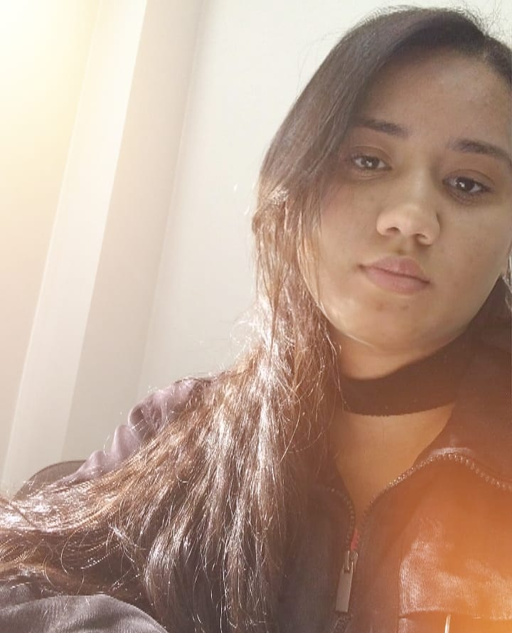

Ola! Meu nome e Ana Paula Moreira, tenho 28 anos, e no momento estou ingressando em uma nova carreira. Iniciei o curso de Biomedicina, onde nao cheguei a concluir, pois não senti que me encaixava ali, então iniciei o curso de Analise e Desenvolvimento de Sistemas, após pesquisar bastante sobre o mundo de programação onde me senti desafiada e a cada dia me apaixonar mais pela area, sinto que isso e o que farei pela vida toda. Esse mundo e magico, e existe tantas possibilidades, que a cada dia inovamos mais e mais.
Venho de uma carreira na area de telemarketing, onde desde 2012 estou nesse setor atuando como resolvedora de problemas, tanto nos setores de Anatel, Procon, Ouvidoria e formularios de reclamações internas, atuando como supervisora desses setores e sempre incentivando minha equipe e time. Hoje eu resolvi mudar e fazer uma transição, sou muito boa em resolver problemas, e vou realizar muitos projetos nessa nova area que escolhi para seguir adiante.
Tenho bastante experiência em supervisão de Telemarketing.
Ser um Programador Fullstack e atuar em varias partes do projeto (back-end, front-end, banco de dados) trabalhando com diversas tecnologia.
Atualmente na Labenu estudo programação Fullstack, onde estou me dedicando muito para que possa absorver todo conheciemnto que esta sendo me passado.